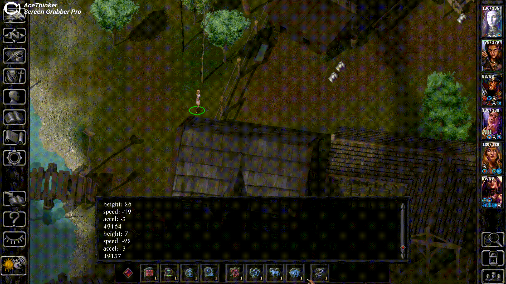

Matthew Sokolovsky - 3D Physics DemonstrationsBack
Matthew Sokolovsky
3D Physics Demonstrations
My mods for Baldur's Gate and Icewind Dale 2 add verticality to these normally 2D games. The clip below shows the character jumping (with some debug messages), which wasn't possible in the original game.

If someone falls and hits the ground fast enough, they take damage based on how fast they were moving when they hit the ground.
Not just creatures can be made 3D, but also the world layout itself. Here I show an enemy being knocked off the side of a tower.
It's possible to create some complex effects with this physics system. Here's a sphere that reverses gravity for creatures inside it.
And here's a tornado which sucks up creatures that come near it.
It's not just characters that can now move in 3D, but also projectiles such as chunks of lava.